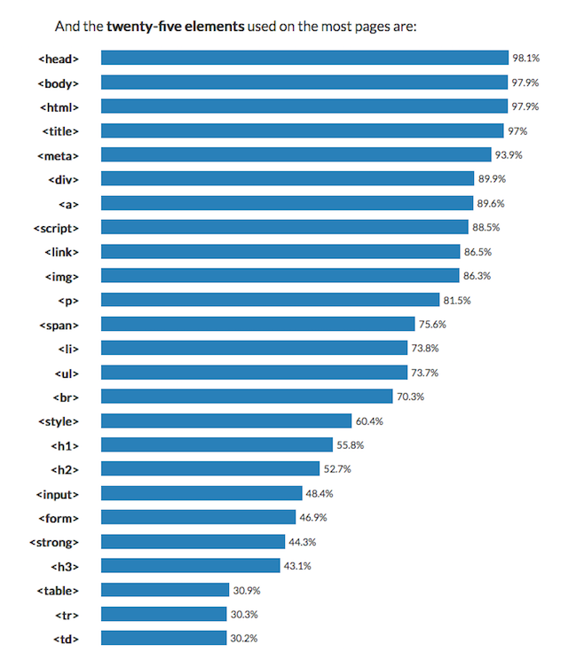

HTML : 웹페이지를 만드는 언어
제목태그
예시) This is heading4
예시) This is heading6
줄바꿈과 단락태그
br 줄바꿈은 닫는 태그가 없다
p 단락태그는 닫는 태그가 있다
주석
- HTML < !-- -->
- CSS /* */
- JavaScript //한줄주석 /*범위주석*/
- C언어 //한줄주석 /*범위주석*/
목차태그
ul(Unordered list)는 목차 부모태그
- li는
- list라는 의미로
- 목차자식태그이다
ol(Orderded list)는 자동숫자가 매겨지는 목차 부모코드
- li는
- list라는 의미로
- 목차자식태그이다
링크
hyperlink reference
hyperlink reference 새탭
이미지

(출처: https://unsplash.com)
동영상
테이블태그
| 코드이름 |
의미 |
기능 |
| table |
table |
표삽입 |
| tr |
table row |
행추가 |
| td |
table cell |
셀추가 |
글꼴
진하게
밑줄
기울이기
체크박스
채팅
댓글